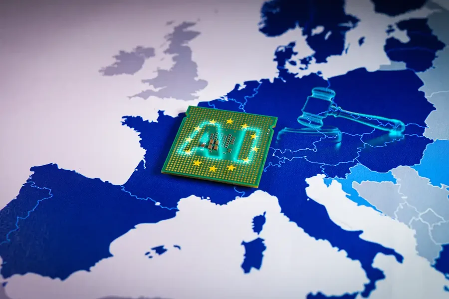
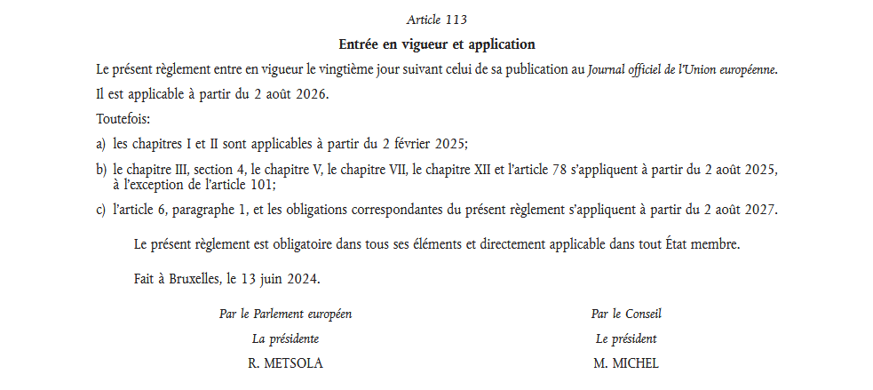

Qu'est-ce que l'AI Act ?
M'intéressant de plus en plus à l'IA et à son impact sur notre société, mes recherches m'ont petit à petit mené sur l'AI Act, le règlement européen qui vise à encadrer le développement et l'usage de l'intelligence artificielle.
Alors j’ai pris le temps de creuser le sujet.
Ce que j’ai découvert, c’est un texte dense, ambitieux, très structuré, mais pas si inaccessible quand on le prend morceau par morceau. Et surtout, c’est un règlement qui touche directement à des enjeux de cybersécurité, de vie privée, de contrôle, de manipulation, bref : tout un tas de charabia intéressant.
Cet article est un essai de vulgarisation, mais aussi un carnet de notes. Il n’a pas vocation à résumer l’intégralité du texte (qui est énorme), mais plutôt à décortiquer ce qui me semble essentiel, en gardant un œil critique et curieux.
On va parler d’interdictions, de modèles à haut risque, de transparence, et même de reconnaissance d’émotion en entreprise…

Résumé
- Considérants (contexte et objectifs)
- Chapitre 1 : Dispositions générales
- Chapitre 2 : Pratiques interdites en matière d'IA
- Chapitre 3 : Systèmes d'IA à haut risque
- Chapitre 4 : Obligations de transparence pour les fournisseurs et les déployeurs de certains systèmes d'IA
- Chapitre 5 : Modèle d'IA à usage générale
- Chapitre 6 : Mesure de soutien à l'innovation
- Chapitre 7 : Gouvernance
- Chapitre 8 : Base de données pour l'UE pour les systèmes d'IA à haut risque
- Chapitre 9 : Surveillance après commercialisation, partage d'informations et surveillance du marché
- Chapitre 10 : Codes de conduite et lignes directrices
- Chapitre 11 : Délégation de pouvoir et procédure de comités
- Chapitre 12 : Sanctions
- Chapitre 13 : Dispositions finales
- Conclusion
Considérants (contexte et objectifs) (pp. 1-44.)
Quand on ouvre un règlement européen comme l’AI Act, la première chose qu’on trouve, ce ne sont pas les articles de loi… mais une longue série de paragraphes numérotés. Ce sont les considérants.
Ce n’est pas du blabla introductif, ni du droit directement applicable : ce sont des justifications, des explications de contexte, et des clés de lecture pour mieux comprendre les choix faits dans le reste du texte. Ils n’ont pas de valeur contraignante à eux seuls, mais ils servent à interpréter le règlement, notamment en cas de litige ou d’ambiguïté.
Dans le cas de l’AI Act, ces considérants forment une sorte de récit d’intention :
L’AI Act veut avant tout améliorer le fonctionnement du marché intérieur en établissant un cadre juridique uniforme (AI Act, considérant (1), p. 1.). Cette harmonisation est essentielle, car sans elle, les règles nationales divergentes risqueraient d'entraîner une fragmentation du marché intérieur et pourraient réduire la sécurité juridique pour ceux qui développent ou utilisent des systèmes d’IA (AI Act, considérant (3), p. 1.).
Le règlement cherche également à promouvoir une intelligence artificielle axée sur l’humain et digne de confiance, tout en garantissant un niveau élevé de protection de la santé, de la sécurité et des droits fondamentaux (AI Act, considérant (1), p. 1.). Il reconnaît pleinement les bénéfices énormes que l’IA peut apporter à divers secteurs comme la santé, l’agriculture, l’énergie et la logistique, tout en soulignant les risques potentiels pour les droits fondamentaux et les intérêts publics (AI Act, considérant (4), p. 2.).
Face à ces risques, l’AI Act insiste pour que le cadre réglementaire soit élaboré dans le respect des valeurs européennes fondamentales consacrées par les traités européens (AI Act, considérant (6), p. 2.). Pour garantir cette cohérence, l'Union européenne a adopté une approche fondée clairement sur les risques : les pratiques les plus dangereuses sont interdites, tandis que celles présentant un risque élevé sont étroitement encadrées par des règles communes afin d'assurer un niveau de protection élevé partout dans l’Union (AI Act, considérant (26), p. 7.).
Enfin, le texte ne part pas de zéro : il s’appuie sur des principes éthiques déjà établis pour une IA digne de confiance, notamment le contrôle humain, la robustesse technique, le respect de la vie privée, la transparence, la diversité, l'équité et la responsabilité (AI Act, considérant (27), p. 8.).
Pour garantir la bonne application de ces règles, le règlement crée également un Bureau de l’IA au sein de la Commission, chargé de surveiller l’application du texte et de pouvoir enquêter sur les fournisseurs de modèles d’IA génériques (AI Act, considérant (164), p. 41.). Par ailleurs, un Comité européen de l’IA (“Comité IA”) rassemblera les États membres pour harmoniser l’application du règlement, rendre des avis techniques et faciliter la coopération entre autorités nationales (AI Act, considérant (149), p. 38.).
En bref, l’AI Act veut poser un cadre équilibré, permettant de profiter pleinement des avantages de l’IA tout en se protégeant contre ses abus potentiels.
Chapitre 1 : Dispositions générales (pp. 44-51.)
> Article 1 et 2 : Objet et champ d'application
Ici, on parle des objectifs de l'acte, comme ils sont assez clairs et courts, je ne les détaillerai pas ici.
Le règlement établit :
- des règles harmonisées concernant la mise sur le marché, la mise en service et l’utilisation de systèmes d’IA dans l’Union;
- l’interdiction de certaines pratiques en matière d’IA;
- des exigences spécifiques applicables aux systèmes d’IA à haut risque et des obligations imposées aux opérateurs de ces systèmes;
- des règles harmonisées en matière de transparence applicables à certains systèmes d’IA;
- des règles harmonisées pour la mise sur le marché de modèles d’IA à usage général;
- des règles relatives au suivi du marché, à la surveillance du marché, à la gouvernance et à l’application des règles;
- des mesures visant à soutenir l’innovation, en mettant particulièrement l’accent sur les PME, y compris "les jeunes pousses" (c'est bien dans le règlement, je ne savais pas mais ce terme est utilisé pour les nouvelles entreprises).
Mais à qui s’appliquent concrètement ces règles ? À presque tout le monde, pourvu que l’IA en question ait un lien avec l’Union européenne. Que le fournisseur soit basé à Paris, à San Francisco ou sur une île perdue de l'océan Indien, si son système est mis sur le marché européen ou que ses résultats y sont utilisés, il est concerné. Ça inclut les fournisseurs, les déployeurs, les importateurs, les distributeurs, voire même les fabricants de produits qui intègrent une IA dans leur matériel. (AI Act, Article 2.1, p. 45.)
A noter que le texte prévoit plusieurs exceptions : il ne s’applique pas aux usages strictement militaires ou de sécurité nationale, ni aux IA développées uniquement à des fins de recherche fondamentale. Les particuliers qui bidouillent une IA dans leur coin pour un usage personnel non professionnel ne sont pas concernés non plus, pas plus que les systèmes publiés en open source tant qu’ils ne sont pas mis en service sur le marché. (AI Act, Article 2.2 à 2.12, p. 46.)
C’est important à noter : le règlement ne remplace pas les textes existants comme le RGPD ou les règles sur la protection des consommateurs. Il vient en complément, sans les affaiblir. (AI Act, Article 2.7 et 2.9, pp. 45-46.)
> Article 3 : Définitions
Je passerai ce passage, ce ne sont que des définitions pour comprendre de quoi on parle.
> Article 4 : Maîtrise de l'IA
Les fournisseurs et les déployeurs de systèmes d’IA prennent des mesures pour garantir, dans toute la mesure du possible, un niveau suffisant de maîtrise de l’IA pour leur personnel et les autres personnes s’occupant du fonctionnement et de l’utilisation des systèmes d’IA pour leur compte, en prenant en considération leurs connaissances techniques, leur expérience, leur éducation et leur formation, ainsi que le contexte dans lequel les systèmes d’IA sont destinés à être utilisés, et en tenant compte des personnes ou des groupes de personnes à l’égard desquels les systèmes d’IA sont destinés à être utilisés. (AI Act, Article 4, p. 41.)
Chapitre 2 : Pratiques interdites en matière d'IA (pp. 51-53.)
> Article 5 : Pratiques interdites en matière d'IA
L’AI Act ne se contente pas de poser des règles ou de classer les systèmes d’IA selon leur niveau de risque. Il trace clairement des lignes rouges en interdisant certains usages jugés incompatibles avec nos droits fondamentaux.
1. La manipulation subliminale ou abusive
Toute IA conçue pour influencer notre comportement de manière subliminale, trompeuse, ou manipulatrice est strictement interdite (article 5.1.a). Cela inclut les systèmes qui exploitent des failles psychologiques, des biais inconscients ou des techniques persuasives abusives pour modifier nos décisions sans que nous en ayons conscience. Même logique pour l’exploitation des personnes vulnérables : les IA ne peuvent pas tirer parti de l’âge, d’un handicap ou d’une fragilité sociale (AI Act, Article 5.1.b, p. 51.).
2. Le scoring social façon chinoise
L’Union européenne rejette catégoriquement l’idée d’une notation sociale généralisée. Un système d’IA qui attribuerait à chaque citoyen un score basé sur son comportement ou ses caractéristiques personnelles, afin de l’utiliser pour discriminer ou restreindre ses droits, est clairement hors-la-loi (AI Act, Article 5.1.c, p. 51.).
3. La prédiction criminelle automatisée (me rappelle quelque chose :-) (cf. Watch Dogs)
Utiliser une IA pour prédire des comportements criminels sur la seule base d’un profil psychologique ou comportemental, sans faits concrets, est interdit (AI Act, Article 5.1.d, p. 51.). En clair : la justice prédictive à la Minority Report ou Watch Dogs est exclue, et seule une évaluation humaine basée sur des preuves tangibles peut recourir à l’aide d’une IA, jamais l’inverse.
4. Le moissonnage massif d’images biométriques
La collecte sauvage d’images faciales en ligne ou par vidéosurveillance, dans le but de constituer des bases de données de reconnaissance faciale à grande échelle, est également interdite (AI Act, Article 5.1.e, p. 51.). Une décision forte pour protéger notre vie privée face à une surveillance biométrique débridée.
6. La catégorisation biométrique sur des critères sensibles
On interdit également : l’usage d’une IA pour identifier ou classer des individus en fonction de caractéristiques sensibles (religion, orientation sexuelle, opinions politiques, etc.) sur la base de données biométriques (AI Act, Article 5.1.g, p. 52.). Une dérive qui ressemble à de la science-fiction, mais techniquement réalisable aujourd’hui, d’où cette interdiction ferme.
7. La reconnaissance biométrique à distance en temps réel (sauf exceptions)
Enfin, l’AI Act interdit par principe l’usage de la reconnaissance faciale biométrique en temps réel dans les espaces publics, notamment à des fins policières. Des exceptions existent toutefois dans des cas très précis : retrouver des victimes disparues, prévenir un attentat imminent ou identifier un suspect impliqué dans une infraction très grave (au moins 4 ans de prison). Même dans ces cas, les conditions sont strictes : autorisation judiciaire obligatoire, transparence et déclaration officielle auprès des autorités compétentes (AI Act, Article 5.1.h à 5.7, pp. 52-53.).
Chapitre 3 : Systèmes d'IA à haut risque (pp. 53-82.)
> Section 1 : Classification de systèmes d’IA comme systèmes à haut risque
1. Un système d’IA mis sur le marché ou mis en service, qu’il soit ou
non indépendant des produits visés aux points a) et b), est considéré
comme étant à haut risque lorsque les deux conditions suivantes sont
remplies :
a) le système d’IA est destiné à être utilisé comme composant de
sécurité d’un produit couvert par la législation d’harmonisation de
l’Union dont la liste figure à l’annexe I, ou le système d’IA
constitue lui-même un tel produit;
b) le produit dont le composant de sécurité visé au point a) est le
système d’IA, ou le système d’IA lui-même en tant que produit, est
soumis à une évaluation de conformité par un tiers en vue de la mise
sur le marché ou de la mise en service de ce produit conformément à la
législation d’harmonisation de l’Union dont la liste figure à l’annexe
I.
2. Outre les systèmes d’IA à haut risque visés au paragraphe 1, les systèmes d’IA visés à l’annexe III* sont considérés comme étant à haut risque.
3. Par dérogation au paragraphe 2, un système d’IA visé à l’annexe III* n’est pas considéré comme étant à haut risque lorsqu’il ne présente pas de risque important de préjudice pour la santé, la sécurité ou les droits fondamentaux des personnes physiques, y compris en n’ayant pas d’incidence significative sur le résultat de la prise de décision.
(AI Act, Article 6, pp. 53-54.)
(AI Act, Annexe III*, pp. 127-129.)
> Section 2 : Exigences applicables aux systèmes d'IA à haut risques
Avant d’être mis sur le marché, les systèmes d’IA considérés comme “à haut risque” doivent respecter une série d’exigences strictes définies par le règlement. Ces exigences visent à garantir qu’ils soient sûrs, fiables, transparents et sous contrôle humain à chaque étape de leur cycle de vie. L’objectif est double : réduire les risques pour les droits fondamentaux, la santé, ou la sécurité, tout en assurant une cohérence avec d’autres législations européennes, notamment dans les secteurs médical, automobile ou industriel (AI Act, Article 8, p. 55).
Concrètement, les fournisseurs doivent mettre en oeuvre :
- Un système de gestion des risques, tout au long du cycle de vie (AI Act, Article 9, p. 56.)
- Une qualité rigoureuse des données utilisées, pour éviter les biais discriminatoires (AI Act, Article 10, p. 57.)
- Une documentation technique complète, accessible aux autorités (AI Act, Article 11, p. 58.)
- Des capacités de traçabilité (journalisation automatique des événements) (AI Act, Article 12, p. 59.)
- Une transparence sur les performances, limites et conditions d’usage (AI Act, Article 13, p. 59.)
- Un contrôle humain prévu et explicite (AI Act, Article 14, p. 60.)
- Une robustesse face aux défaillances et une cybersécurité renforcée (AI Act, Article 15, p. 61.)
> Section 3 : Obligations incombant aux fournisseurs de modèles d’IA à usage général présentant un risque systémique
Ici, on va établir des règles concernant "Qui fait quoi ?" ou "Qui est soumis à quoi ?". Une fois qu’un système d’IA est classé « à haut risque », tout le monde dans sa chaîne de vie a un rôle clair à jouer. Et ici, l’AI Act ne rigole pas avec les responsabilités. Chaque acteur doit se mettre en conformité. Voici une overview des rôles :
Les fournisseurs
Un fournisseur d’IA à haut risque, c’est celui qui conçoit et met sur le marché le système. À lui d’assurer que l’IA est conforme, documentée, testée, traçable et transparente. Il doit :
- Assurer la conformité technique avec toutes les exigences de la section 2 (section précédente): qualité des données, transparence, robustesse, sécurité, documentation…
- Tenir un système de gestion de la qualité, incluant les procédures de tests, de surveillance post-déploiement, la traçabilité des incidents, etc. (AI Act, Article 17, p. 62.)
- Rédiger la doc technique complète, adaptée aux autorités et facilement compréhensible. (durée de conservation : 10 ans) (AI Act, Article 18, p. 63.)
- Tenir des journaux d’événements, les conserver au minimum 6 mois. (AI Act, Article 19, p. 64.)
- Soumettre son système à une évaluation de conformité, souvent avec un organisme notifié externe. (AI Act, Article 43 et Article 47, p. 78, p. 80.)
- Apposer le marquage CE et établir la déclaration de conformité UE. (AI Act, Article 48, p. 81.)
- S’enregistrer dans la base de données européenne dédiée. (AI Act, Article 49.1, p. 81.)
- Mettre en œuvre des mesures correctives immédiates s’il détecte une non-conformité ou un risque. (AI Act, Article 20, p. 64.)
- Coopérer avec les autorités, fournir les infos sur demande, corriger si un problème est signalé. (AI Act, Article 21, p. 64.)
Les importateurs
Un importateur, c’est celui qui fait entrer une IA à haut risque sur le marché européen en provenance d’un pays tiers. Avant toute mise sur le marché, l’importateur doit vérifier que le fournisseur a bien fait son travail.
S’il a le moindre doute sur la conformité ou l’authenticité des documents, il doit bloquer la commercialisation jusqu’à résolution du problème. Et si un risque est identifié, il est obligé d’en informer le fournisseur, les autorités et tous les acteurs concernés (AI Act, Article 23.2, p. 66.).
L'importateur doit aussi :
- Apposer ses propres coordonnées sur le produit ou son emballage (AI Act, Article 23.3, p. 66.)
- Garantir les bonnes conditions de stockage et de transport, pour ne pas altérer les performances du système (AI Act, Article 23.4, p. 66.)
- Conserver tous les documents clés pendant 10 ans (AI Act, Article 23.5, p. 66.)
- Transmettre toute info aux autorités sur simple demande, dans une langue compréhensible (AI Act, Article 23.6, p. 66.)
- Coopérer en cas de contrôle ou d’incident, comme tout acteur de confiance du marché (AI Act, Article 23.7, p. 66.)
Les distributeurs
Les distributeurs n’introduisent pas directement les systèmes d’IA sur le marché européen, mais jouent un rôle central en les mettant à disposition. Pour éviter les dérives, ils doivent vérifier plusieurs points avant toute distribution : la présence du marquage CE, mais aussi que la déclaration UE de conformité et la notice d’utilisation accompagnent bien le produit. Ils doivent également s’assurer que le fournisseur et l’importateur ont respecté toutes leurs obligations de base (AI Act, Article 24.1, p. 66.).
En cas de problème identifié, leur responsabilité est engagée : pas question de distribuer un système non conforme (AI Act, Article 24.2, p. 66.). S'ils détectent un risque, ils doivent immédiatement informer les autorités et les autres acteurs de la chaîne, et prendre ou faire prendre les mesures correctives nécessaires, comme le retrait ou le rappel du produit (AI Act, Article 24.4, p. 66.).
Enfin, les distributeurs ont aussi des obligations pratiques : ils doivent garantir les bonnes conditions de transport et de stockage des systèmes d’IA, fournir aux autorités toutes les informations utiles sur les mesures prises, et coopérer pleinement en cas d’enquête ou d’audit (AI Act, Article 24.3 à Article 24.6, p. 66.).
Les déployeurs
Le déployeur, c’est celui qui met en service l’IA dans un cadre réel (entreprise, administration, établissement scolaire, etc.). Le texte est clair : utiliser une IA à haut risque, c’est s’engager à l’utiliser correctement. Il doit :
- Respecter la notice d’utilisation, ne pas détourner l’IA de son usage prévu.
- Assurer le contrôle humain, via des personnes compétentes, formées et bien outillées.
- Vérifier la qualité et la représentativité des données d’entrée, quand c’est possible.
- Surveiller le comportement de l’IA, et signaler sans délai tout incident, bug ou dérive aux autorités (et au fournisseur).
- Tenir les journaux d’événements, s’ils sont sous leur contrôle.
- Informer les personnes concernées, notamment sur le lieu de travail.
- Effectuer une analyse d’impact sur les droits fondamentaux, dans certains cas (administration publique, usage éducatif, ou RH sensibles).
- Ne pas utiliser un système non enregistré dans la base européenne, et refuser tout système douteux.
Toutes les obligations incombant les déployeurs sont détaillées ici : AI Act, Article 26.1 à Article 26.12, pp. 67-69.
Et si quelqu'un modifie l'IA après coup ?
Le règlement est clair : si un acteur modifie substantiellement une IA déjà mise sur le marché, il en devient fournisseur à son tour, avec toutes les responsabilités que ça implique. (AI Act, Article 25, p. 67.)
1. Tout distributeur, importateur, déployeur ou autre tiers est
considéré comme un fournisseur d’un système d’IA à haut risque aux
fins du présent règlement et est soumis aux obligations incombant au
fournisseur au titre de l’article 16 dans toutes les circonstances
suivantes:
a) il commercialise sous son propre nom ou sa propre marque un système
d’IA à haut risque déjà mis sur le marché ou mis en service, sans
préjudice des dispositions contractuelles prévoyant une autre
répartition des obligations;
b) il apporte une modification substantielle à un système d’IA à haut
risque qui a déjà été mis sur le marché ou a déjà été mis en service
de telle manière qu’il reste un système d’IA à haut risque en
application de l’article 6;
c) il modifie la destination d’un système d’IA, y compris un système
d’IA à usage général, qui n’a pas été classé à haut risque et a déjà
été mis sur le marché ou mis en service de telle manière que le
système d’IA concerné devient un système d’IA à haut risque
conformément l’article 6.
Chapitre 4 : Obligations de transparence pour les fournisseurs et les déployeurs de certains systèmes d'IA (pp. 82-83.)
L’AI Act impose aux fournisseurs et déployeurs de certains systèmes d’intelligence artificielle une série d’obligations de transparence. L’objectif est de garantir que les personnes concernées savent qu’elles interagissent avec une IA, ou qu’un contenu qu’elles consultent a été généré ou manipulé par une IA.
Premièrement, les systèmes d’IA conçus pour interagir directement avec des personnes physiques doivent être développés de manière à ce que l’utilisateur soit informé qu’il ne s’agit pas d’un humain. Cette exigence ne s’applique pas si cela est déjà évident pour un individu normalement informé, raisonnablement attentif et avisé. Elle ne s’applique pas non plus aux systèmes utilisés dans un cadre pénal ou judiciaire, sauf si ces systèmes sont accessibles au public pour signaler une infraction (AI Act, Article 50.1, p. 82.).
Ensuite, les systèmes d’IA, y compris ceux à usage général, qui produisent des contenus synthétiques (texte, image, audio, vidéo) doivent intégrer un mécanisme d’identification indiquant que ces contenus sont générés ou modifiés par une IA. Cette identification doit être lisible par machine et conçue de manière à être fiable, robuste, interopérable et efficace, en tenant compte de l’état de la technique. Il existe des exceptions, notamment lorsque l’IA n’a qu’une fonction d’assistance (mise en forme standard, par exemple), ou lorsqu’elle est utilisée à des fins judiciaires ou policières encadrées par la loi (AI Act, Article 50.2, p. 82.).
Lorsqu’un système est utilisé pour la reconnaissance des émotions ou pour la catégorisation biométrique, les personnes concernées doivent être informées. Ces traitements doivent respecter les règles applicables en matière de protection des données personnelles (RGPD, règlement 2018/1725 ou directive 2016/680 selon les cas). Là encore, une dérogation est prévue pour les usages répressifs, sous réserve de garanties appropriées (AI Act, Article 50.3, p. 82.).
Par ailleurs, lorsqu’un système d’IA génère ou modifie des images, vidéos ou contenus audio qualifiables de deepfake ou d’hypertrucage, l’obligation d’informer s’applique également. Cette obligation peut être allégée si le contenu fait clairement partie d’une œuvre artistique, créative, satirique ou fictive, à condition que l’existence de l’usage de l’IA soit néanmoins indiquée de manière appropriée. Pour les textes générés et publiés dans le but d’informer le public, la mention du recours à l’IA est obligatoire, sauf s’il y a eu un contrôle éditorial humain ou si l’utilisation est prévue par la loi dans un cadre judiciaire ou policier (AI Act, Article 50.4, p. 82.).
Toutes ces informations doivent être communiquées aux personnes concernées de manière claire, reconnaissable et dès la première interaction ou exposition. Elles doivent en outre respecter les exigences en matière d’accessibilité (AI Act, Article 50.5, p. 83.).
Ces obligations viennent s’ajouter à celles déjà imposées aux systèmes d’IA à haut risque par le chapitre III. Elles ne remplacent pas les obligations existantes dans d’autres textes européens ou nationaux, mais les complètent (AI Act, Article 50.6, p. 83.).
Enfin, le Bureau de l’IA est chargé de promouvoir l’élaboration de codes de bonne pratique européens pour aider à la mise en œuvre de ces règles. La Commission peut approuver ces codes ou, si elle estime qu’ils sont insuffisants, adopter des actes d’exécution établissant des règles communes contraignantes (AI Act, Article 50.7, p. 83.).
Chapitre 5 : Modèle d'IA à usage générale (pp. 83-88.)
L'AI Act s’attaque à un type de modèle bien particulier : les modèles d’IA à usage général. Ce sont les briques de base de nombreux systèmes que l’on connaît aujourd’hui (modèles de langage, générateurs d’image, assistants vocaux, outils de résumé ou de traduction…).
Ils sont dits "à usage général" parce qu’ils peuvent être intégrés dans une grande variété d’applications, sans être conçus pour une tâche spécifique. Ce sont souvent des modèles pré-entraînés sur d’énormes quantités de données, qui peuvent être adaptés ou réutilisés (comme GPT, Claude, Mistral ou LLaMA par exemple).
Mais dans cette catégorie,
l’AI Act distingue deux niveaux :
→ Les modèles à usage général "classiques"
→ Et les modèles à usage général présentant un risque systémique
C'est quoi un risque systémique ?
On parle de cette catégorie quand un modèle atteint un certain seuil de puissance ou s’il est désigné comme tel par la Commission européenne. Le seuil technique actuellement retenu est un volume d’entraînement supérieur à 10²⁵ FLOPs (unités de calcul utilisées pendant l’entraînement du modèle) (AI Act, Article 51.1 et Article 51.2, p. 83).
Ce seuil correspond à des modèles de très grande ampleur, qui ont le potentiel de produire des effets à large échelle, de manière directe ou indirecte : désinformation, manipulation sociale, dépendance critique, ou encore apparition de comportements imprévus. Ce n’est pas le modèle lui-même qui est jugé dangereux, mais le niveau de contrôle nécessaire quand son impact peut traverser de multiples domaines sans supervision humaine directe.
Dans certains cas, il est possible pour un fournisseur de démontrer que malgré sa puissance, son modèle ne présente pas de risque systémique, en fonction de son usage, de son architecture ou des protections mises en place. Mais c’est la Commission qui tranche. (AI Act, Article 52.2 et Article 52.3, pp. 83-84.)
Quelles obligations pour les fournisseurs ?
Tous les fournisseurs de modèles d’IA à usage général, qu’ils soient
ou non classés "systémiques", ont un socle d’obligations à respecter
(AI Act, Article 53, pp. 84-85.).
*Évidemment,
ces obligations ne s’appliquent pas aux modèles open
source
rendus publics dans leur intégralité (poids, architecture, usage),
sauf si le modèle est classé comme systémique. (AI Act, Article
53.2, p. 85.)
Par contre, les fournisseurs de modèles classés à risque systémique doivent aller plus loin. Ils doivent :
- Réaliser des tests rigoureux, y compris des essais contradictoires, pour détecter les risques (AI Act, Article 55.1.a, p. 86.)
- Évaluer et atténuer les risques systémiques à l’échelle de l’Union européenne (AI Act, Article 55.1.b, p. 86.)
- Signaler sans délai tout incident grave au Bureau de l’IA (AI Act, Article 55.1.c, p. 86.)
- Renforcer la cybersécurité, tant au niveau du modèle qu’au niveau de l’infrastructure qui l’exécute (AI Act, Article 55.1.d, p. 86.)
Gouvernance
Le texte prévoit également la désignation d’un mandataire dans l’UE pour les fournisseurs hors Europe, et encourage l’élaboration de codes de bonne pratique, pilotés par le Bureau de l’IA, auxquels les fournisseurs peuvent adhérer volontairement (AI Act, Article 55 et Article 56, p. 85, p. 86.).
Ces codes doivent fixer des méthodes communes (par exemple sur la manière d’évaluer les risques ou de documenter les contenus d’entraînement) et seront requis si aucune norme harmonisée n’est encore disponible. S’ils ne sont pas prêts à temps ou jugés insuffisants, la Commission pourra imposer des règles communes par voie d’acte d’exécution (AI Act, Article 56.9, p. 87.).
Chapitre 6 : Mesure de soutien à l'innovation (pp. 88-95.)
Contrairement à une vision punitive de la régulation, ce chapitre insiste sur un principe fort : aider les acteurs de l’IA à se mettre en conformité sans freiner leur capacité à innover, en particulier les jeunes pousses et les PME. Pour cela, plusieurs dispositifs sont mis en place, le principal étant les bacs à sable réglementaires de l’IA.
Les bacs à sable réglementaires sont des environnements encadrés, surveillés et temporaires, où des acteurs peuvent développer, tester, entraîner ou valider des systèmes d’IA innovants avant leur mise sur le marché (AI Act, Article 57.5, p. 88.). Ils permettent aux autorités compétentes d’apporter des conseils, de surveiller les risques, et de donner des retours concrets sur la conformité d’un projet (AI Act, Article 57.6 et Article 57.7, p. 88.)
Chaque État membre devra en mettre au moins un en place d’ici le 2 août 2026, mais il est aussi possible d’en créer au niveau local ou transfrontalier (AI Act, Article 57.1 et 57.2, p. 88.). La Commission soutient ces initiatives avec des outils, des modèles et une plateforme centralisée (AI Act, Article 57.1 et Article 62.3.b, p. 88, p. 94.).
Les bacs à sable ont plusieurs objectifs :
- Apporter de la clarté réglementaire à ceux qui développent des IA complexes (AI Act, Article 57.9.a, p. 88.).
- Faciliter l’accès au marché en accélérant certaines étapes d’évaluation (AI Act, Article 57.7, p. 88.).
- Permettre des essais réels sous supervision, dans le respect des droits fondamentaux (AI Act, Article 57.5 et Article 57.6, p. 88.).
- Éviter les sanctions, lorsque l’expérimentation respecte les règles du bac à sable, même en cas d’erreur (AI Act, Article 57.12, p. 89.).
- Soutenir l’innovation des PME, qui bénéficient d’un accès à frais réduits (proportionnellement à leur taille, à la taille de leur marché et à d’autres indicateurs), d’un accompagnement renforcé et d’une prise en compte spécifique dans la tarification des évaluations de conformité (AI Act, Article 58.2.d et Article 62.1-2, p. 94.).
Les participants peuvent repartir avec un rapport de sortie fourni par les autorités, qui peut ensuite faciliter les procédures d’évaluation officielles (AI Act, Article 57.7, p. 88.).
Et la protection des données ?
Le règlement encadre de façon très stricte le traitement de données personnelles dans ces environnements. Par exemple, une IA développée pour des raisons d’intérêt public (santé, climat, sécurité, services publics…) peut réutiliser des données déjà collectées, mais uniquement dans un cadre sécurisé, isolé, avec supervision et sans effet juridique sur les individus (AI Act, Article 59, p. 91.)
Essais en conditions réelles
Le chapitre prévoit aussi la possibilité de mener des tests sur le terrain de systèmes d’IA à haut risque en dehors des bacs à sable, à condition de respecter un cadre strict :
- Plan d’essai approuvé par l’autorité de surveillance (AI Act, Article 60.4.a-b, p. 92.)
- Information claire des participants, y compris sur leur droit de retrait (AI Act, Article 61.1-2, p. 94.)
- Enregistrement dans une base de données européenne (AI Act, Article 60.4.c, p. 92.)
- Supervision technique continue et possibilité de corriger ou ignorer les recommandations de l’IA (AI Act, Article 60 et Article 61, pp. 92-94.) (art. 60–61)
La coopération des autorités nationales
Le règlement prévoit que les autorités nationales coopèrent entre elles et avec le Bureau de l’IA, notamment pour éviter la fragmentation des règles, permettre la reconnaissance mutuelle des bacs à sable entre pays, et favoriser un écosystème européen cohérent (AI Act, Article 57.13-15 et Article 58.2.g, p. 89, p. 90.).
Chapitre 7 : Gouvernance (pp. 95-100.)
Pour superviser l'application du règlement, l’Union européenne met en place une gouvernance partagée entre Bruxelles et les États membres.
Au centre, on trouve le Bureau de l’IA, piloté par la Commission, chargé de développer l’expertise et de coordonner les actions à l’échelle de l’Union (AI Act, Article 64, p. 95).
À ses côtés, le Comité européen de l’IA réunit des représentants des États membres pour assurer une application cohérente du règlement. Il peut proposer des recommandations, harmoniser les pratiques, et suivre les évolutions du secteur (AI Act, Articles 65 et Article 66, pp. 95–96).
Un Forum consultatif (avec chercheurs, ONG, entreprises...) et un groupe scientifique indépendant viennent appuyer les décisions avec une expertise technique (AI Act, Articles 67 et Article 68, pp. 97–98).
Enfin, chaque pays désigne ses propres autorités nationales de contrôle, qui veillent à l’application locale du règlement. Elles doivent être compétentes, indépendantes et suffisamment équipées pour agir efficacement (AI Act, Article 70, p. 99).
Chapitre 8 : Base de données pour l'UE pour les systèmes d'IA à haut risque (pp. 100-101.)
Pour garantir un meilleur suivi des systèmes d’IA à haut risque, la Commission européenne met en place une base de données centralisée à l’échelle de l’Union. Cette base regroupe des informations techniques essentielles sur les systèmes enregistrés, qu’ils aient été jugés à haut risque ou non, selon les critères du règlement. Elle est alimentée directement par les fournisseurs d’IA et, dans le cas des administrations publiques, par les déployeurs concernés (AI Act, Article 71.2 et Article 71.3, p. 100).
L’essentiel des données est mis à disposition du public, de manière lisible et accessible en ligne, à l’exception de certaines entrées sensibles, comme celles relatives aux essais en conditions réelles, qui restent réservées aux autorités de surveillance. Des informations personnelles sont aussi incluses, mais uniquement lorsqu’elles sont nécessaires pour identifier les personnes responsables du système déclaré.
La Commission reste responsable de cette base, tant sur le plan technique que juridique. L’objectif est clair : offrir un outil de transparence, de confiance et de contrôle sur les systèmes d’IA les plus sensibles, dans le respect des droits fondamentaux (AI Act, Article 71.6, p. 101).
Chapitre 9 : Surveillance après commercialisation, partage d'informations et surveillance du marché (pp. 101-113.)
Si vous lisez ceci, rassurez-vous, on arrive presque au bout.. 😉
Les informations sont très denses. Et je fais du mieux que je peux
pour les récupérer et les résumer en les sourceant au maximum pour les
recherches futures.
Dans cette partie, on traite de la surveillance après la mise sur le marché, du signalement des incidents graves, et des pouvoirs de contrôle pour assurer le respect du cadre réglementaire.
> Section 1 : Surveillance après commercialisation
Les fournisseurs de systèmes d’IA à haut risque doivent mettre en place un système de suivi continu de leurs modèles, fondé sur un plan structuré, pour détecter les risques potentiels ou déviations après mise sur le marché. Ce suivi inclut des retours utilisateurs, des données de performance, et une analyse des interactions avec d'autres IA. L’objectif est de garantir que les modèles restent conformes aux exigences du chapitre III tout au long de leur cycle de vie (AI Act, Article 72, p. 101).
> Section 2 : Partage d'informations sur les incidents graves
Un incident grave (comme un décès, une atteinte aux droits fondamentaux ou une infraction massive) doit être signalé aux autorités nationales dans des délais stricts (en fonction de l'ampleur de l'incident grave (AI Act, Article 73.2, p. 102)). Les fournisseurs doivent aussi enquêter, collaborer avec les autorités, et corriger rapidement les défaillances constatées (AI Act, Article 73, p. 101).
> Section 3 : Contrôle de l'application
Les autorités de surveillance peuvent :
- coopérer avec d'autres États membres et la Commission via des enquêtes conjointes si un système présente un risque dans plusieurs pays (AI Act, Article 74.11, p. 104)
- obtenir un accès au code source ou aux données d’entraînement, en dernier recours (AI Act, Article 74.13, p. 104)
- contrôler les systèmes mis sur le marché, y compris ceux à usage général s’ils sont utilisés dans des contextes à haut risque (AI Act, Article 75.1, p. 104)
- ordonner des retraits ou sanctionner les fournisseurs en cas de manquement (AI Act, Article 79.9, p. 107)
> Section 4 : Voie de recours
- Toute personne peut porter plainte auprès d’une autorité de surveillance (AI Act, Article 85, p. 110.)
- Un droit à l’explication des décisions prises par des IA à haut risque est garanti, sauf exceptions légales (AI Act, Article 86, p. 110.)
- La directive sur les lanceurs d’alerte (UE 2019/1937) s’applique aux signalements de violations du règlement (AI Act, Article 87, p. 110.)
> Section 5 : Surveillance, enquêtes, contrôle de l’application et contrôle en ce qui concerne les fournisseurs de modèles d’IA à usage généra
La Commission européenne, via le Bureau de l’IA, est seule compétente pour surveiller les fournisseurs de modèles d’IA à usage général. Elle peut :
- agir sur la base d’alertes scientifiques provenant du groupe d’experts indépendants (AI Act, Article 90.1, p. 111.)
- initier des évaluations de conformité (AI Act, Article 91.1, p. 111.)
- demander de la documentation ou des accès techniques (API, code) (AI Act, Article 91.3, p. 112.)
- imposer des mesures d’atténuation si un risque systémique est détecté (AI Act, Article 93.1.b, p. 113.)
Chapitre 10 : Codes de conduite et lignes directrices (pp. 113-114.)
Cette partie met en place deux outils d'accompagnement non obligatoires, pensés pour accompagner les acteurs de l’intelligence artificielle dans l’application du règlement : les codes de conduite volontaires et les lignes directrices de la Commission.
→ Les codes de conduite sont encouragés par le Bureau de l’IA et les États membres. Leur objectif est de permettre aux développeurs et utilisateurs de systèmes d’IA (même lorsque ceux-ci ne sont pas considérés comme à haut risque) d’adopter volontairement certaines exigences du règlement, notamment en matière de qualité, de sécurité, ou de respect des droits fondamentaux (durabilité environnementale, promotion de la maîtrise de l'IA, ...). Ces codes peuvent être élaborés par des entreprises, des groupements professionnels, ou encore des organisations de la société civile, avec une attention particulière portée aux besoins des petites structures comme les PME et "les jeunes pousses" (AI Act, Article 95, p. 113.).
→ En complément, la Commission publiera des lignes directrices officielles, qui, elles non plus, n’ont pas de valeur juridique contraignante. Elles visent à clarifier certains points du règlement et à guider les opérateurs dans sa mise en œuvre concrète (AI Act, Article 96 p. 114.).
Chapitre 11 : Délégation de pouvoir et procédure de comité (pp. 114-115.)
Ce chapitre explique comment la Commission européenne peut, dans certains cas, adapter ou préciser des éléments techniques du règlement, sans devoir relancer toute la machine législative (vote au Parlement et au Conseil). Ce pouvoir lui est délégué pour une durée de cinq ans renouvelable à partir d’août 2024.
La Commission peut par exemple ajuster un seuil pour définier un risque systémique (on se rappelle de la puissance de calcul avec les FLOPs), compléter une obligation, ou mettre à jour une annexe à la lumière de l’évolution technologique. Avant de le faire, elle doit consulter des experts des États membres, puis informer formellement le Parlement européen et le Conseil.
Ces derniers ont un délai de trois mois (renouvelables) pour s’opposer à la mesure. S’ils ne le font pas, l’acte entre en vigueur. Et s’ils estiment un jour que la Commission outrepasse ce pouvoir, ils peuvent le lui retirer à tout moment.
Enfin, un comité d’experts européens accompagne la Commission dans ce processus, notamment pour encadrer les actes d’exécution, qui servent à appliquer le règlement dans le détail.
(AI Act, Article 97 et Article 98, pp. 114-115.)
Chapitre 12 : Sanctions (pp. 115-118.)
Un chapitre assez important ici, concrètement, si on ne respecte pas le règlement, à quoi peut-on s'attendre comme sanction ?
Ce chapitre définit le régime des sanctions applicables en cas de non-respect du règlement. Les États membres restent libres de fixer les modalités exactes (amendes, avertissements, mesures correctives), mais ces sanctions doivent être effectives, proportionnées et dissuasives. Une attention particulière est portée à la situation des PME et des nouvelles entreprises (AI Act, Article 99.1 et Article 99.6, pp. 115, p. 116.).
Certaines violations entraînent des amendes très lourdes :
- Jusqu’à 35 millions d’euros ou 7 % du chiffre d’affaires mondial pour les pratiques interdites listées à l’article 5 (AI Act, Article 99.3, p. 115.).
- Jusqu’à 15 millions d’euros ou 3 % du chiffre d’affaires mondial pour des manquements aux obligations générales des opérateurs pour des manquements aux obligations générales des opérateurs (fournisseurs, importateurs, déployeurs, etc.) ou aux obligations de transparence (AI Act, Article 99.4, p. 115.).
- Jusqu’à 7,5 millions d’euros ou 1 % du chiffre d’affaires mondial en cas de fourniture d’informations inexactes, incomplètes ou trompeuses aux autorités (AI Act, Article 99.5, p. 116.).
Le montant exact dépend de plusieurs facteurs contextuels : gravité, durée, nombre de personnes concernées, responsabilité, coopération avec les autorités, récidive, négligence ou intention, mesures prises pour limiter le dommage, etc.
Des régimes particuliers s’appliquent également :
- Aux institutions de l’Union, surveillées par le Contrôleur européen de la protection des données, avec des amendes pouvant aller jusqu’à 1,5 million d’euros pour les violations des pratiques interdites, ou 750 000 euros pour les autres manquements (AI Act, Article 100.2 et Article 100.3, p. 116.).
- Aux fournisseurs de modèles d’IA à usage général, directement sous la compétence de la Commission européenne, avec des sanctions allant jusqu’à 15 millions d’euros ou 3 % du chiffre d’affaires mondial en cas de non-coopération, d’obstruction ou de violation de leurs obligations (AI Act, Article 101.1, p. 117.).
Enfin, dans tous les cas, le texte garantit des droits procéduraux, comme la possibilité de se défendre, l’accès au dossier et le droit à un recours juridictionnel (AI Act, Article 99.10 et Article 100.5, pp. 116–117.).
Chapitre 13 : Dispositions finales (pp. 118-123.)
Le chapitre final précise que l'AI Act s'appliquera progressivement :

En parallèle, plusieurs règlements et directives européens sont adaptés pour intégrer les exigences liées aux systèmes d’IA à haut risque (AI Act, Article 102-113, pp. 118-123.).
Conclusion
C’est toujours une bonne chose d’avoir un cadre réglementaire clair, surtout sur un sujet aussi sensible et évolutif que l’intelligence artificielle. L’AI Act pose des bases solides, avec l’ambition de protéger les droits fondamentaux sans étouffer l’innovation. Mais comme souvent avec les textes européens, tout se jouera dans la mise en œuvre concrète. Reste à voir si l’acte tiendra ses promesses sur la durée.
J’ai pris le temps de lire et relire le règlement, d’en décortiquer chaque section, de croiser les éléments, de résumer tout ça le plus fidèlement possible. C’est la première fois que je fais ce genre d’exercice en profondeur, et même si c’est long, dense, parfois technique, c’est aussi franchement enrichissant. 144 pages passées au peigne fin, c’est pas rien, mais au moins, j'ai une vision beaucoup plus claire des enjeux et des implications de cette législation.
Je vous dis à bientôt pour de nouvelles analyses et réflexions. Peace. 😉